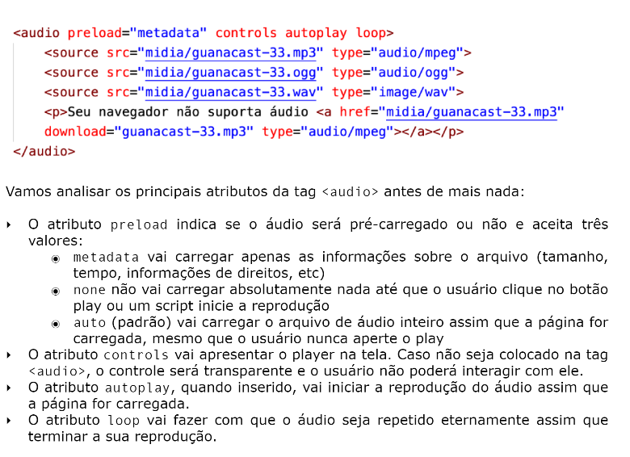

Abra esse site em diferentes dispositivos ou aumente e diminua o tamanho do seu navegador
Com a tag source media type, podemos mudar a imagem conforme o tamanho do dispositivo ou navegador
Com a tag audio colocamos o áudio no site, informamos o diretório do áudio com o parâmetro src
Podemos colocar o atributo controls, para poder tocar, parar, mutar etc (basicamente, controlar como o nome sugere). Também há o atributo autoplay para tocar automaticamente e o loop para loopar o áudio
Podemos aumentar os formatos de áudio conforme a compatibilidade do usuário com o source src, parecido com as imagens anteriores
Para mostrar vídeos em um site, usamos a tag video
width indica a largua do vídeob
poster vai configurar a "thumbnail" do vídeo
controls assim como o do áudio, para configurar o video exibido no próprio site.
autoplay para configurar se vai tocar automaticamente
Indo no compartilhar de qualquer vídeo do youtube, copiamos o código presente no botão incorporar e então podemos colocar o vídeo no site, colando-o.